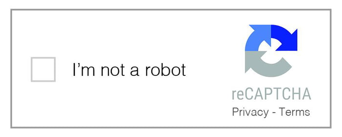

Защита от парсинга
Ручной и консольный парсинг
От этого метода существует множество способов защиты.
Запрет на копирование в буфер обмена.
На сайт добавляют небольшой скрипт, который разрешает копирование текста, но не позволяет вставить его в буфер обмена.
Подключение reCAPTCHA.
Сервис reCAPTCHA и всевозможные аналоги дают крайне низкую эффективность при защите от парсинга и спама.
Добавление ссылки при копировании текста.
На сайт внедряют небольшой скрипт, который автоматом привязывает к скопированному тексту ссылку на источник.
Запрет на копирование.
Вы можете создать отдельный CSS-стиль, запрещающий выделение текста. Речь идёт о небольшом микрокоде, с которым легко разобраться самому или поручить эту задачу программисту.

Запрет на копирование в буфер обмена.
На сайт добавляют небольшой скрипт, который разрешает копирование текста, но не позволяет вставить его в буфер обмена.
Подключение reCAPTCHA.
Сервис reCAPTCHA и всевозможные аналоги дают крайне низкую эффективность при защите от парсинга и спама.
Добавление ссылки при копировании текста.
На сайт внедряют небольшой скрипт, который автоматом привязывает к скопированному тексту ссылку на источник.
Запрет на копирование.
Вы можете создать отдельный CSS-стиль, запрещающий выделение текста. Речь идёт о небольшом микрокоде, с которым легко разобраться самому или поручить эту задачу программисту.
Статический парсинг
Блокировка ботов по IP.
Это один из способов противодействия парсингу, когда данные крадут постоянно и, как правило, в большом объёме. Если с одного IP идет подозрительно много траффика, то можно просто заблокировать его.
Использование DMCA protected.
Речь идёт о платном сервисе мониторинга контента. Подключившись к вашему сайту, он периодически совершает обход и проверяет страницы на предмет появления копий.
Это один из способов противодействия парсингу, когда данные крадут постоянно и, как правило, в большом объёме. Если с одного IP идет подозрительно много траффика, то можно просто заблокировать его.
Использование DMCA protected.
Речь идёт о платном сервисе мониторинга контента. Подключившись к вашему сайту, он периодически совершает обход и проверяет страницы на предмет появления копий.
Динамический парсинг
Использование скрипта автозамены символов.
Замена идет в 3 этапа: 1)Замена символов в html коде (или в тексте подгружаемых данных) 2) Скрипт при отображениии текста отображает текст в нормальном виде (для чтения пользователя) 3) Последний скрипт шифрует текст при копировании.
Брендирование контента.
Статьи нужно делать более персонализированными, писать от лица бренда и чаще упоминать его название, причём делать это так, чтобы бегло подчистить текст было как можно сложнее.
Замена идет в 3 этапа: 1)Замена символов в html коде (или в тексте подгружаемых данных) 2) Скрипт при отображениии текста отображает текст в нормальном виде (для чтения пользователя) 3) Последний скрипт шифрует текст при копировании.
Брендирование контента.
Статьи нужно делать более персонализированными, писать от лица бренда и чаще упоминать его название, причём делать это так, чтобы бегло подчистить текст было как можно сложнее.